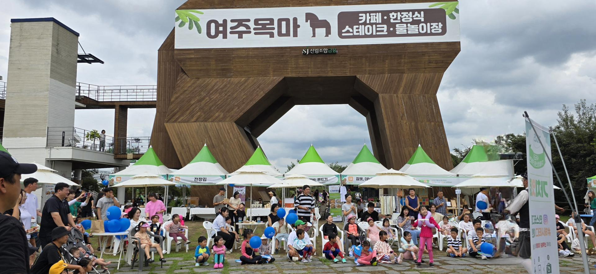
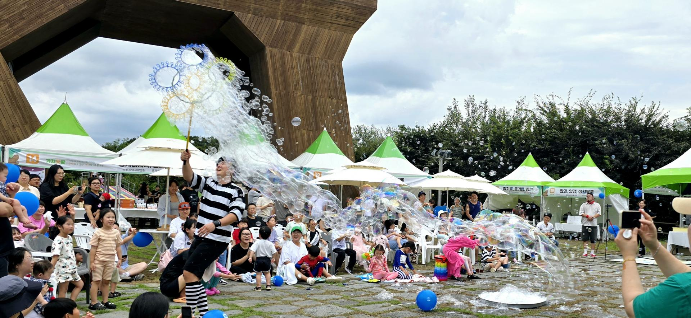

물놀이장
어린이 물놀이·가족 이용 공간. 룸 예약과 함께 안내합니다.
10:00–20:00월 휴무
시설
휴식
쇼핑 다음의 여유. 목마 앞 물놀이장과 잔디 위 글라스룸·방갈로. 가족·연인·소모임에 맞춰 날짜를 예약하세요. 성수기·주말은 전화 확정을 권합니다.
여주 프리미엄 아울렛에서 차로 약 10분. 쇼핑 후 아이를 위한 물놀이로 하루를 이어가기 좋습니다.
어린이 물놀이·가족 이용 공간. 룸 예약과 함께 안내합니다.

통유리 프라이빗 룸. 소규모 가족·연인에게 적합합니다.

독립 좌석·시즌 패키지. 유형은 운영 일정에 따라 달라집니다.
이용
예약
날짜와 시설을 고른 뒤 신청하세요. 성수기·주말은 전화 확정이 가장 빠릅니다.
사진: 여주목마 현장